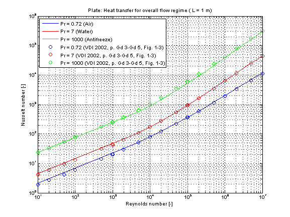

Modelica.Fluid.Dissipation.Utilities.SharedDocumentation.HeatTransfer.Plate
Modelica.Fluid.Dissipation.Utilities.SharedDocumentation.HeatTransfer.Plate
Modelica.Fluid.Dissipation.Utilities.SharedDocumentation.HeatTransfer.Plate
| Name | Description |
|---|---|
Modelica.Fluid.Dissipation.Utilities.SharedDocumentation.HeatTransfer.Plate.kc_laminarCalculation of the mean convective heat transfer coefficient kc for a laminar fluid flow over an even surface.
There are basically three differences:

The mean convective heat transfer coefficient kc for flat plate is calculated through the corresponding Nusselt number Nu_lam according to [VDI 2002, p. Gd 1, eq. 1] :
Nu_lam = 0.664 * Re^(0.5) * (Pr)^(1/3)
and the corresponding mean convective heat transfer coefficient kc :
kc = Nu_lam * lambda / L
with
| cp | as specific heat capacity at constant pressure [J/(kg.K)], |
| eta | as dynamic viscosity of fluid [Pa.s], |
| kc | as mean convective heat transfer coefficient [W/(m2.K)], |
| lambda | as heat conductivity of fluid [W/(m.K)], |
| L | as length of plate [m], |
| Nu_lam | as mean Nusselt number for laminar regime [-], |
| Pr = eta*cp/lambda | as Prandtl number [-], |
| rho | as fluid density [kg/m3], |
| Re = rho*v*L/eta | as Reynolds number [-]. |
The mean Nusselt number Nu in the laminar regime representing the mean convective heat transfer coefficient kc for Prandtl numbers of different fluids is shown in the figure below.

Note that this function is best used in the laminar regime up to a Reynolds number Re smaller than 2300. There is a deviation w.r.t. literature due to the neglect of the turbulence influence in the transition regime even though this function is used inside its cited restrictions for a higher Reynolds number. The function kc_overall is recommended for the simulation of a Reynolds number higher than 2300.
Extends from Modelica.Icons.Information (Icon for general information packages).
Modelica.Fluid.Dissipation.Utilities.SharedDocumentation.HeatTransfer.Plate.kc_overallCalculation of the mean convective heat transfer coefficient kc for a laminar or turbulent fluid flow over an even surface.
There are basically three differences:
This heat transfer function enables a calculation of heat transfer coefficient for laminar and turbulent flow regime. The geometry, constant and fluid parameters of the function are the same as for kc_laminar and kc_turbulent.
The calculation conditions for laminar and turbulent flow is equal to the calculation in kc_laminar and kc_turbulent. A smooth transition between both functions is carried out between 1e5 ≤ Re ≤ 5e5 (see figure below).
The mean Nusselt number Nu = sqrt(Nu_lam^2 + Nu_turb^2) representing the mean convective heat transfer coefficient kc for Prandtl numbers of different fluids is shown in the figure below.
Extends from Modelica.Icons.Information (Icon for general information packages).
Modelica.Fluid.Dissipation.Utilities.SharedDocumentation.HeatTransfer.Plate.kc_turbulentCalculation of the mean convective heat transfer coefficient kc for a hydrodynamically developed turbulent fluid flow over an even surface.
There are basically three differences:
The mean convective heat transfer coefficient kc for flat plate is calculated through the corresponding Nusselt number Nu_turb according to [VDI 2002, p. Gd 1, eq. 2]:
Nu_turb = (0.037 * Re^0.8 * Pr) / (1 + 2.443/Re^0.1 * (Pr^(2/3)-1))
and the corresponding mean convective heat transfer coefficient kc :
kc = Nu_turb * lambda / L
with
| cp | as specific heat capacity at constant pressure [J/(kg.K)], |
| eta | as dynamic viscosity of fluid [Pa.s], |
| kc | as mean convective heat transfer coefficient [W/(m2.K)], |
| lambda | as heat conductivity of fluid [W/(m.K)], |
| L | as length of plate [m], |
| Nu_turb | as mean Nusselt number for turbulent regime [-], |
| Pr = eta*cp/lambda | as Prandtl number [-], |
| rho | as fluid density [kg/m3], |
| Re = v*rho*L/eta | as Reynolds number [-]. |
The mean Nusselt number in turbulent regime Nu representing the mean convective heat transfer coefficient kc for Prandtl numbers of different fluids is shown in the figure below.

Extends from Modelica.Icons.Information (Icon for general information packages).